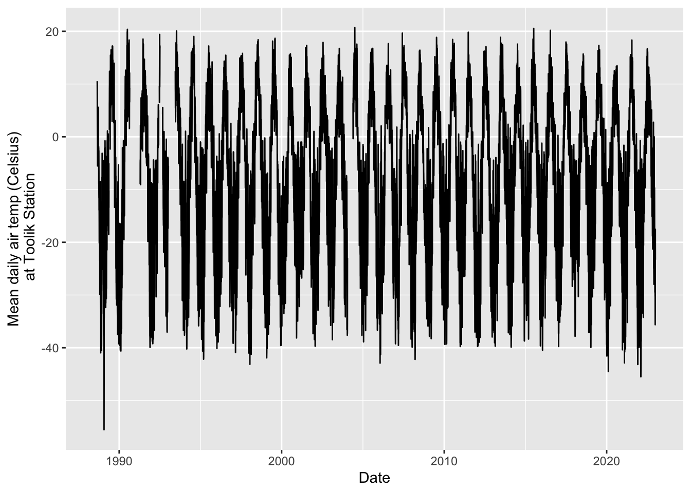
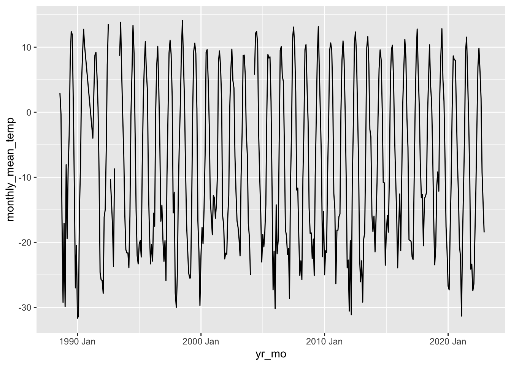
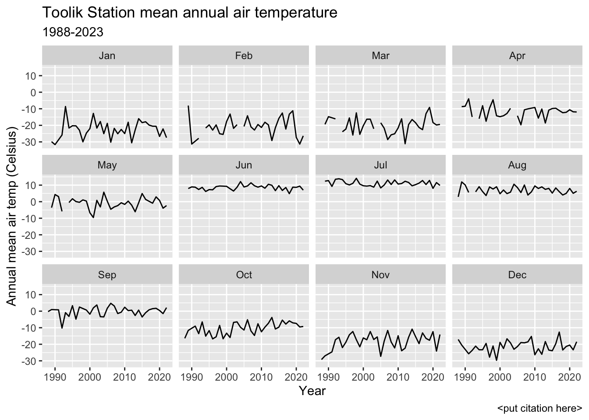
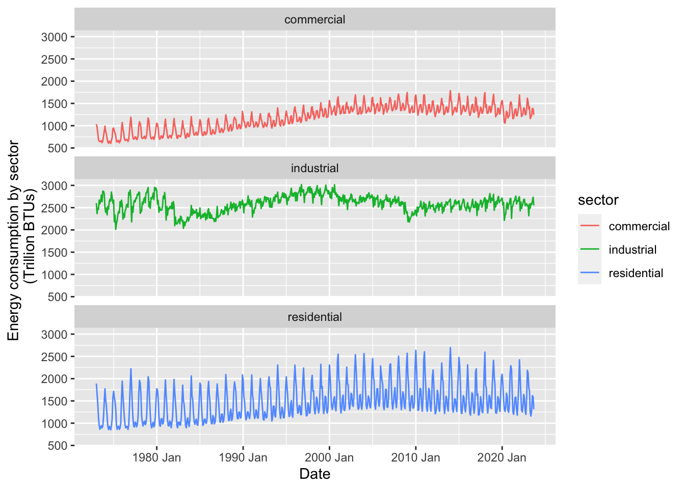
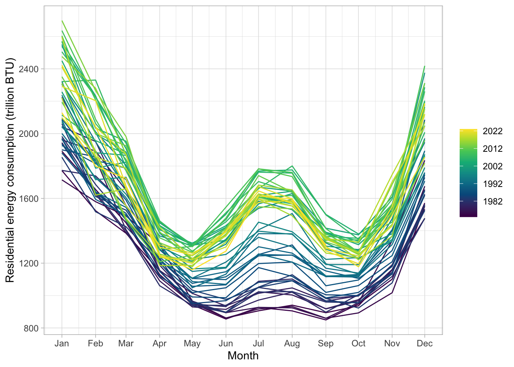
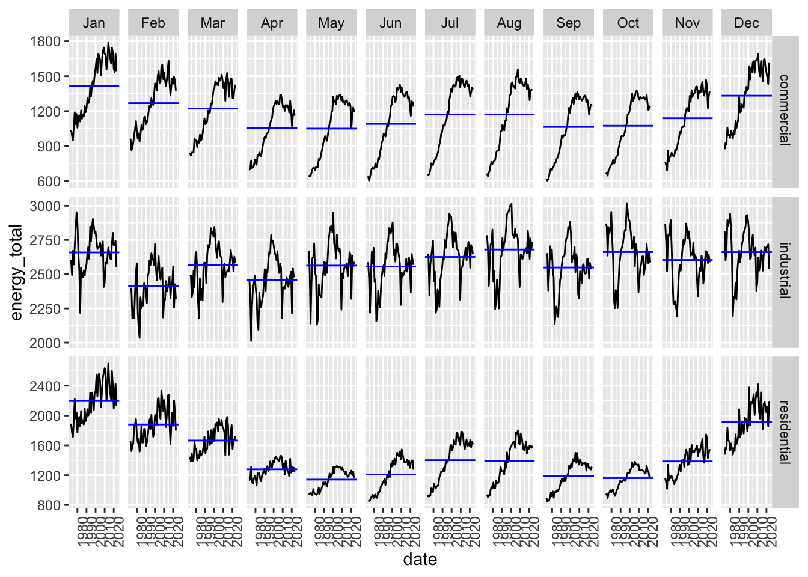
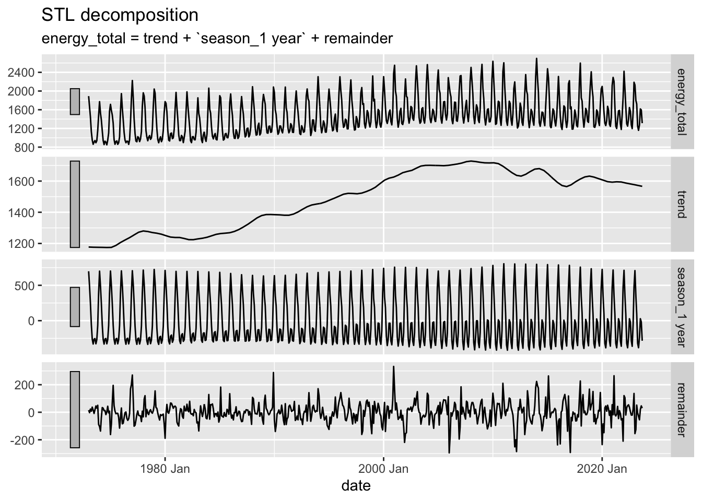
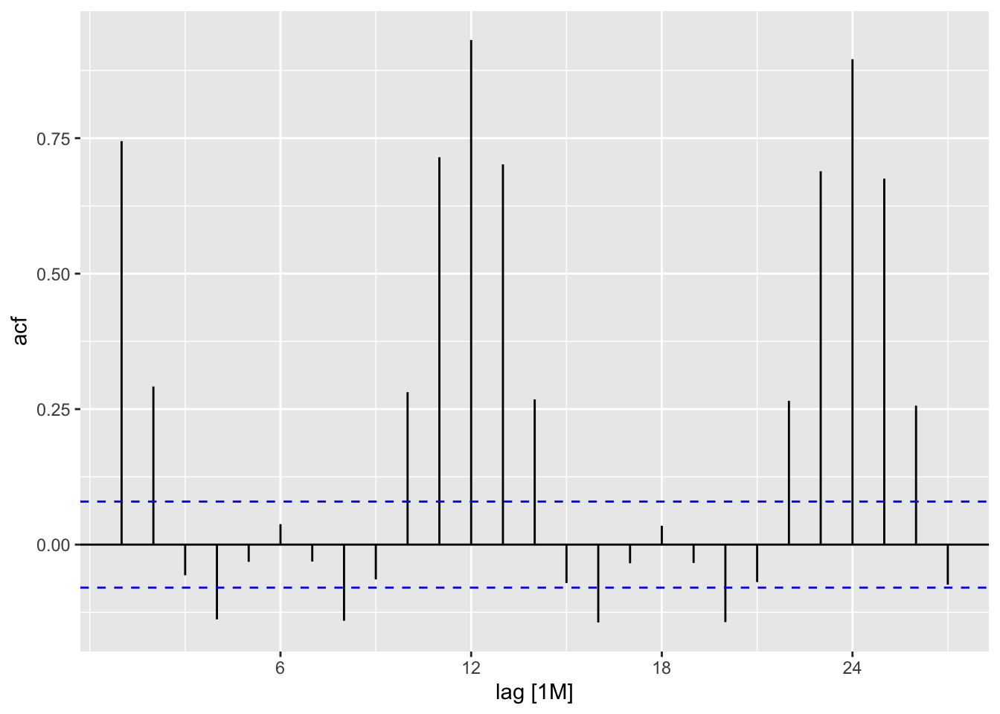
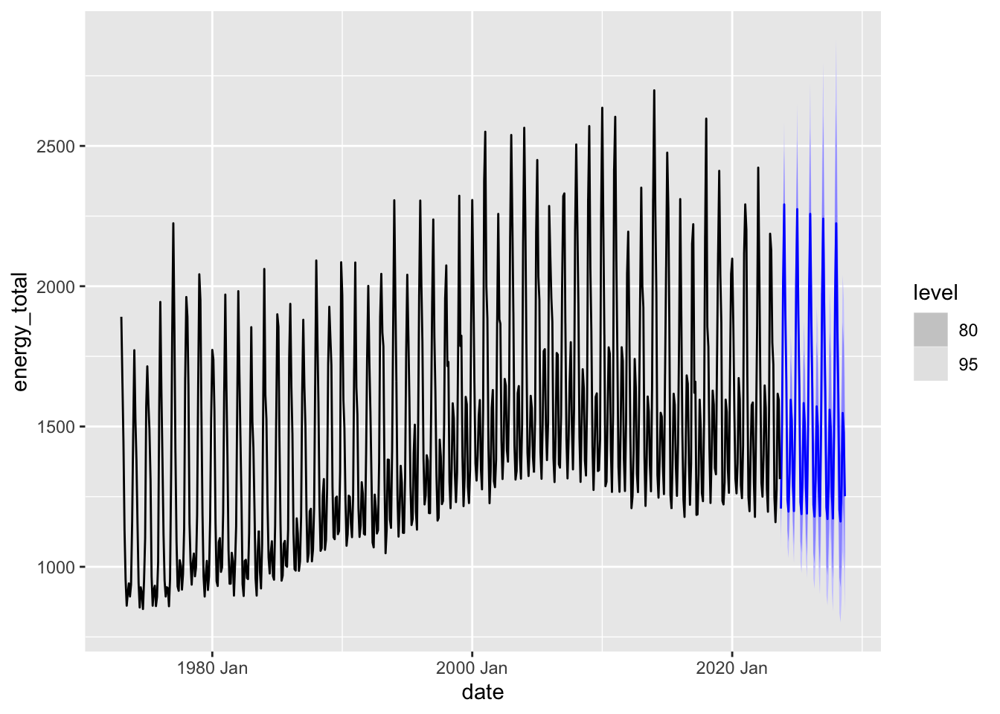
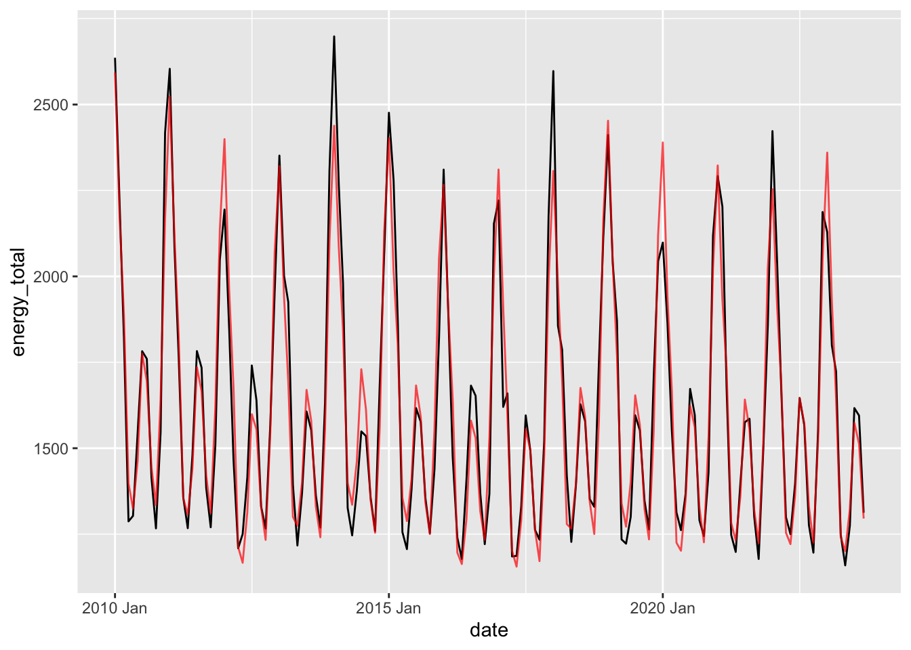

Code
library(tidyverse)
library(here)
library(tsibble)
library(feasts)
library(fable)library(tidyverse)
library(here)
library(tsibble)
library(feasts)
library(fable)toolik_df <- read_csv(here('data/toolik_daily.csv'))
# note: data column is read in as a character, will need to change. all other columns are doubles
### convert data frame to time series using as_tsibble
toolik_ts <- toolik_df %>%
mutate(date = lubridate::mdy(date)) %>%
as_tsibble(key = NULL, # if we had multiple sites, key by site
index = date) # index is setting our time series variable
ggplot(toolik_ts, aes(x = date, y = daily_air_temp)) +
geom_line() +
labs(x = 'Date', y = 'Mean daily air temp (Celsius)\n at Toolik Station') # \n makes a line break
### Filter from Dec 2010 to Jan 2011
toolik_ts %>%
filter_index('2018-01-01' ~ .) # . means start or end of your data# A tsibble: 1,826 x 5 [1D]
date daily_air_temp daily_precip mean_barom mean_windspeed
<date> <dbl> <dbl> <dbl> <dbl>
1 2018-01-01 -23.7 0.2 920. 0.787
2 2018-01-02 -10.6 0.5 909. 4.26
3 2018-01-03 -4.34 0 916. 5.75
4 2018-01-04 -7.25 0.2 924. 2.77
5 2018-01-05 -16.7 0.3 924. 1.71
6 2018-01-06 -25.4 0 921. 1.01
7 2018-01-07 -25.7 0 928. 2.53
8 2018-01-08 -19.6 0.1 931. 5.85
9 2018-01-09 -15.0 0.1 929. 7.76
10 2018-01-10 -24.9 0 925. 3.03
# ℹ 1,816 more rows# Can aggregate by month, week, or other increment
toolik_month <- toolik_ts %>%
index_by(yr_mo = ~yearmonth(.)) %>% # identify all year-month combinations in our timeseries column
summarize(monthly_mean_temp = mean(daily_air_temp, na.rm = TRUE)) %>% # index_by() and summarize() can go nicely together
ungroup() # remove any lingering groupingsNow let’s plot this!
ggplot(data = toolik_month, aes(x = yr_mo, y = monthly_mean_temp)) +
geom_line()
ggplot(toolik_month, aes(x = year(yr_mo), y = monthly_mean_temp)) + # just use year
geom_line() +
facet_wrap(~ month(yr_mo, label = TRUE)) + # break apart by month
labs(x = 'Year', y = 'Annual mean air temp (Celsius)',
title = 'Toolik Station mean annual air temperature',
subtitle = '1988-2023',
caption = '<put citation here>')
Energy usage by sector, in trillions of BTUs.
energy_df <- read_csv(here('data/energy.csv'))
# note: yrmonth is stored as a character, need to convert to dateconvert the yrmonth column to a date time series format make time series data frame visualize data using ggplot / geom_line average the energy consumption by year (?) filter for only the residential data decompose data to look for trends and seasonality break apart by month / look for seasonality forecasting once we have looked at the trends select suitable prediction model define the alpha value (for exponential smoothing)
energy_ts <- energy_df %>%
mutate(date = tsibble::yearmonth(yrmonth)) %>% # another function to convert to date
as_tsibble(key = sector, # use sector as our key. can have one date for 3 dif obs (differ by sector)
index = date)ggplot(data = energy_ts, aes(x = date, y = energy_total, color = sector)) +
geom_line() +
labs(x = 'Date', y = 'Energy consumption by sector \n (Trillion BTUs)') +
facet_wrap(~ sector, ncol = 1)
energy_ts %>%
filter(sector == 'residential') %>%
gg_season(y = energy_total, pal = hcl.colors(n = 9)) +
theme_light() +
labs(x = 'Month', y = 'Residential energy consumption (trillion BTU)')
# can see seasonality, as well as how years differ from each otherenergy_ts %>%
gg_subseries(y = energy_total) # breaks down data by month and sector over the time period
### Find the STL decomposition (L = LOESS = Locally Estimated Scatterplot Smoothing)
dcmp <- energy_ts %>%
filter(sector == 'residential') %>%
model(feasts::STL(energy_total ~ season(period = '1 year') +
trend(window = 49))) # create STL model. defining your season and trend
components(dcmp) %>%
autoplot() # autoplot helps convert model output into a typical plot
# shows your data, and then the trend, seasonal component, and remainderenergy_ts %>%
filter(sector == 'residential') %>%
ACF(energy_total) %>% # creates ACF model (autocorrelation function)
autoplot()
# compares data using lag times
# can see: how far out can you find good correlations? can you use 12 months out? what about 24?Specify for each component, whether none (“N”), additive (“A”), or multiplicative (“M”)
### Create a model
energy_fit <- energy_ts %>%
filter(sector == 'residential') %>%
filter_index('2010-01' ~ .) %>%
model(ets = ETS(energy_total ~ season(method = "M") + trend(method = "A"))) # exponential time smoothing
energy_forecast <- energy_fit %>% # put fit model into forecast function, tell it what time span to forecast
forecast(h = "5 years")
energy_forecast %>%
autoplot(energy_ts) # can plot your actual data and add on your forecast
energy_predicted <- energy_fit %>%
broom::augment()
# compare model to actual data
ggplot(energy_predicted) +
geom_line(aes(x = date, y = energy_total)) +
geom_line(aes(x = date, y = .fitted), color = 'red', alpha = 0.7)
ggplot(energy_predicted, aes(x = .resid)) +
geom_histogram()